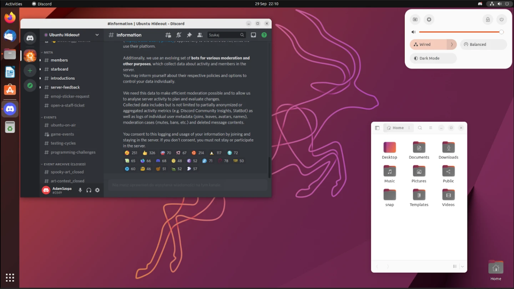

Welcome to a world free of Windows. A world where you own your own hardware. A world where a tech conglomerate does not hold you hostage. If you're here, it means you've had a glimpse of the other side, the fabled greener pastures, and you're at least slightly intrigued by it. And I'm Alex, your neighbourhood Linux cultist. So, let me teach you all about the world of Linux and its unique ecosystem.
Firstly, chances are that you've already heard me talk about Linux and how I prefer it to Windows. Testament to that is the fact all my laptops and my desktop run only Linux and I have completely banished Windows from my life. Additionally, I'm not an Apple person either, so no iOS for me.
First things first, what's Linux? As the elitists would say, Linux is a kernel. But you, as the user, don't need to care about whatever a kernel is. Seriously. Linux has progressed far enough that you don't need a PHD in Computer Science to use it. So, as far as you're concerned, Linux is your operating system. < elitist cries of "uhm ackshually, it's GNU/LINUX" >
So, while Windows and iOS are the predominant user-facing Operating Systems, Linux is offered as a strong contender to the match. One of the defining factors of Linux is that it is Open Source, which basically means that its code is publicly available, for all to see and contribute to. The whole stack making up your Linux OS constitutes of many sub-units which are worked on by people from all around the world. This is in direct contrast to Windows which is closed source, meaning only Microsoft developers can make changes to the OS.
Now, this won't affect your user experience much, but its a principle of ethics and maybe you would prefer working in an OS which isn't owned by a single giant entity.
It's cool to know what Linux is, and how it works, but what really concerns you, as a user, is whether Linux will give you a better experience than Windows.
First of all, since Linux is open source and all that, it means Linux won't go to crap in a day. I bring this up in comparison to Windows, where user-unfriendly "features" have been slipped in here and there as it progressed from 7 to 11, and these drawbacks are ruining the Windows experience. Since Linux is made up of multiple individual projects, each managed by their own communities and policies, it would be quasi-impossible to ruin Linux in a year.
Secondly, since most Linux Operating Systems are free, there is no monetary incentive to implement user-unfriendly policies. This means a guarantee of heightened privacy and security, as compared to Windows, which many users are now comparing to glorified spyware, in view of Windows 11.
Thirdly, I firmly believe that Linux is even more stable than Windows. I have been running Linux on my laptop for more than a year now and it has not once crashed or frozen on me. In comparison, Windows would often run out of resources, possibly due to poor management, and experienced the classical Blue Screen of Death. There is a reason that many of the servers upholding the internet and serving you your favourite content are running some flavour of Linux.
Linux is not resource-intensive. This makes it a great candidate for breathing new life into old machines with hardware which can barely run Windows in slow motion. Instead of ditching your PC and being forced to upgrade to keep up with the increasing RAM requirements, Linux can make do with much less. For example, my laptop has an Intel Pentium Gold and only 4 GB of DDR4 RAM. God forbid I try to open Chrome on it inside Windows 10! Instead, I'm sitting nicely at 25% CPU usage and 3 GB RAM usage with 20 Firefox tabs open.
It has to be said... Not everything is perfect with Linux. From my experience though, everything is fine, except one: compatibility.
Since Linux is not Windows, all those Windows ".exe" programs will not run on Linux. So, if a developer does not compile their app to run on Linux, or if it is just plain incompatible, you might have some issues getting it to run. A notable example of this is Microsoft Word, which does not really run on Linux. Fortunately though, the Open Source community has gifted us with LibreOffice, which is totally free and supports the Microsoft Office formats (.docx, .xmlx etc...) and has all the equivalent programs, replacing Word, Excel, Powerpoint, Access and even those you've never heard of.
While Office has Libreoffice to replace it, this shows that a good deal of software built for Windows or Mac simply will not run on Linux, and the problem is exacerbated if you're a gamer and most of your library is not on Steam. Steam offers Proton, which lets nearly all of its games run on Linux, but those distributed on other platforms do not have these facilities and may require you to jump through loopholes to get running. Adobe does not release its suite of Software for Linux either, which is a real pain.
It is a significant drawback for people interested in switching, and if this would be a dealbreaker for you, you can always dual-boot Windows and Linux, to make the most of both worlds. However, if you have the willpower, for software such as Photoshop, many good Linux equivalents exist which are as good if not better than the original.
Are you sold on Linux yet? You don't need to be completely convinced on it though. In fact, you can try Linux out in a simple and painless way, without having to install it on your hard disk. So, you can have a play around with it, and only install it if you are satisfied. Welcome to Live booting.
Most distributions (distros) of Linux come with the option to Live boot before installing the OS onto your PC. This is done by flashing the .iso file onto a USB using software such as Balena Etcher, then booting from it instead of from your hard disk. That is done by spamming "del" or "F12" while your laptop is booting, in order to swap boot
device to the USB temporarily. You will then boot up into Linux where you can have a play around with the desktop environment and installed software.
Linux comes in many flavours (distros), all of which are managed and developed by different groups around the world. While this massive choice may be terrifying to the average user picking one out, it does not need to be. But, to reassure you, I sometimes change distros, just for fun. This is called distro-hopping and is somewhat common in the Linux community since its always fun to try out something new. Anyway, I compiled a short list of Linux distros which I find rather beginner-friendly, to give a bit of direction when making your first choice. Keep in mind though, that opinions vary widely online in a war of "distro superiority".
Ubuntu:
It's a sleek Linux distro which offers many facilities and third party applications, which get you started easily. Everything comes pre-packed so you will not have to go out of your way and use the Command Line Interface to install missing dependencies. The installation process is also extremely straightforward, so even people who aren't the best in tech, fresh from Windows, will be able to get it running.
Linux Mint:
My personal choice as most beginner-friendly distro. It's the one I started with (and still use daily) and it is also used by most of my family. The installation process is fairly simple too, and it asks you if you want to install some third party software such as LibreOffice and GIMP during the installation of the OS. It has a desktop environment very similar to Windows, so you will not have much difficulty getting used to it.

Fedora:
Fedora is up there among the easiest distro to use. It is extremely reliable and sturdy and will not crash your computer as often as Windows. It uses a desktop environment which is very sleek and easily customisable, meaning you can make your device truly yours. I cannot comment on the ease of install, but I am sure it is on-par with Ubuntu and Mint. It also comes with a suite of useful apps pre-installed although you may have to install some like LibreOffice and Gnome by yourself.

OpenSUSE:
A bit of an honorable mention here. OpenSUSE is not the most beginner friendly of distros but may be the ideal candidate for someone looking for a bit of excitement and adventure in their new OS. Featuring a vibrant and highly customisable desktop environment, OpenSUSE is marketed as the maker's choice for sysadmins, developers and desktop users. In fact, I am looking into using OpenSUSE on my new laptop.
All of these Linux distros are, in my opinion, quite easy to use, and you, coming from Windows, should have no trouble getting things started on them. Linux as a whole offers a new perspective on your ownership over your device and helps make your desktop *yours*, all while providing a more secure, private, and reliable OS. Linux has evolved at a tremendous pace and will only keep getting more beginner-friendly with time. If you're interested in ditching the out of control train that is Windows anytime soon, you can always try Linux out in Live Boot! And feel free to message me if you want to learn more, or if you're determined on making the shift.
As usual, thank you for reading.
Signed: Your neighbourhood Linux cultist, Alex.